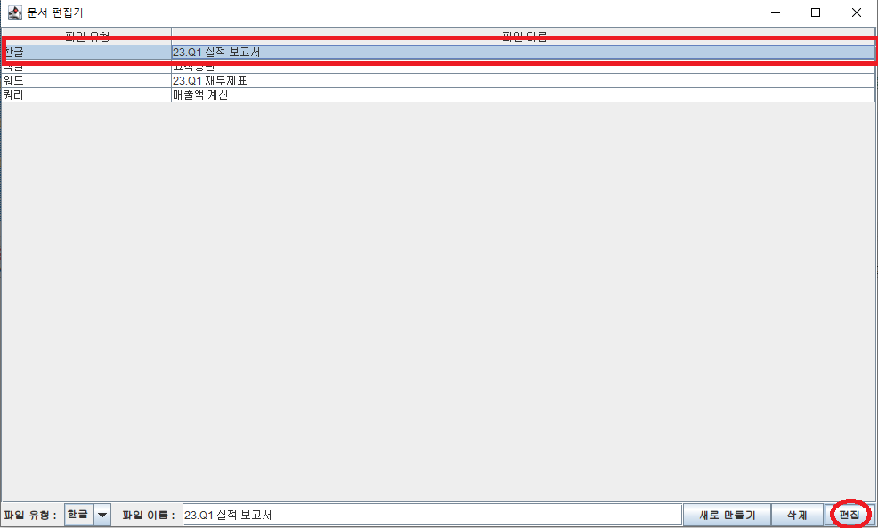

코딩 5주차 - 텍스트 편집기
간단한 텍스트 객체를 생성, 삭제, 편집할 수 있는 편집기를 만들었습니다.
진짜 오피스 파일과의 연동은 아직 어려워서 그냥 이 코드 내에서만 존재하는 데이터로 했습니다.
1. 완성 이미지
-

-

-

- 
-

-

-

-

-

2. 코드
main : MainFrame
package file_editor;
import javax.swing.*;
import javax.swing.table.DefaultTableModel; // 테이블 수정에 관련된 패키지
import javax.swing.table.JTableHeader;
import java.awt.*;
import java.awt.event.ActionEvent;
import java.awt.event.ActionListener;
import java.awt.event.MouseEvent;
import java.awt.event.MouseListener;
public class MainFrame {
public static void main(String[] args) { // 저장소와 사용자가 보는 파일 목록은 서로 연동되지 않고, 별개로 동작합니다.
Dimension dim = new Dimension(1000,600);
JFrame frame = new JFrame("문서 편집기");
frame.setLocation(200, 400);
frame.setPreferredSize(dim);
String[][] inputArrStr = new String[Storage.getInstance().FileList.length][2]; // 보여줄 파일 목록을 준비하는 과정입니다.
for(int i=0; i<Storage.getInstance().FileList.length; i++) { // 파일 목록에는 파일의 유형과 이름만 들어갑니다.
for(int j=0; j<2; j++) {
inputArrStr[i][j] = Storage.getInstance().FileList[i][j];
}
}
String[][] contents = inputArrStr;
String[] header = {"파일 유형", "파일 이름"};
DefaultTableModel model = new DefaultTableModel(contents,header); // 테이블 세팅과 관련된 것
JTable table = new JTable(model); // 테이블 생성.
JScrollPane scrollpane = new JScrollPane(table);
// 내용을 모델에 넘기고, 모델을 테이블에 연결.
JPanel panel = new JPanel();
panel.setLayout(new BoxLayout(panel,BoxLayout.LINE_AXIS)); //
JTextField textField = new JTextField(8);
String[] comboText = {"한글","워드","엑셀","쿼리"}; // 파일 유형은 이 4가지로 제한됩니다.
JComboBox sortCombo = new JComboBox(comboText); // 파일의 편집 및 선택은 콤보와 텍스트 필드에 의해 결정됩니다.
table.getColumn("파일 유형").setPreferredWidth(100);
table.getColumn("파일 이름").setPreferredWidth(700);
JLabel text_sortName = new JLabel(" 파일 유형 : ");
JLabel text_fileName = new JLabel(" 파일 이름 : ");
table.addMouseListener(new MouseListener() { // 마우스로 항목을 클릭하면 해당 항목의 유형과 이름이 각각 콤보목록과 텍스트필드에 출력됩니다.
@Override
public void mouseClicked(MouseEvent e) {
int row = table.getSelectedRow(); // 선택된 y축 값을 가져옵니다.
sortCombo.setSelectedItem(table.getValueAt(row, 0)); // 해당 y축에 존재하는 값들을 콤보목록과 텍스트필드에 출력합니다.
textField.setText((String) table.getValueAt(row, 1));
}
@Override
public void mousePressed(MouseEvent e) { // 그 외의 기능은 불필요하여 구현하지 않았습니다.
}
@Override
public void mouseReleased(MouseEvent e) {
}
@Override
public void mouseEntered(MouseEvent e) {
}
@Override
public void mouseExited(MouseEvent e) {
}
});
JButton add_create_new_Btn = new JButton("새로 만들기"); // 파일을 새로 만드는 버튼입니다.
add_create_new_Btn.addActionListener(new ActionListener() {
@Override
public void actionPerformed(ActionEvent e) {
if((textField.getText() == null) | (sortCombo.getSelectedItem() == null)) { // 유형과 제목이 입력되었는지를 확인합니다.
System.out.println("유형 또는 제목을 입력하세요.");
return;
}
else {
for(int i=0; i<inputArrStr.length; i++) { // 중복되는 항목이 존재하는지 확인합니다.
if(inputArrStr[i][0].equals((String)sortCombo.getSelectedItem())&&inputArrStr[i][1].equals(textField.getText())) {
System.out.println("유형과 이름이 중복되는 파일이 존재합니다.");
return;
}
}
} // 이러한 조건을 모두 통과한다면 다음으로 진행합니다.
String[] new_save = new String[3]; // 데이터 저장소에 입력할 파일 양식입니다.
new_save[0] = String.valueOf((String)sortCombo.getSelectedItem()) ; // 유형과 이름만 입력하고, 내용은 공백으로 둡니다.
new_save[1] = textField.getText();
new_save[2] = "";
Storage.getInstance().save_in_storage(new_save); // 저장소에 저장합니다.
System.out.println("새로운 파일이 생성되었습니다.");
System.out.println("파일 유형 : " + new_save[0] + ", 파일 이름 : " + new_save[1]);
String[] insertStr = new String[2]; // 이번에는 목록에 표현할 파일 양식입니다.
insertStr[0] = new_save[0];
insertStr[1] = new_save[1];
model.addRow(insertStr); // y축을 추가하면서 해당 내용을 입력합니다.
}
});
JButton add_del_Btn = new JButton("삭제");
add_del_Btn.addActionListener(new ActionListener() {
@Override
public void actionPerformed(ActionEvent e) {
if((textField.getText() != null) && (sortCombo.getSelectedItem() != null)) { // 유형과 제목이 입력되었는지를 확인합니다.
String del_sort = String.valueOf(sortCombo.getSelectedItem()); // 저장소에서 해당 데이터를 삭제하는 과정입니다.
String del_name = textField.getText();
Storage.getInstance().delete_in_storage(del_sort,del_name);
int ySzie = model.getRowCount(); // 사용자가 보는 파일 목록에서 해당 데이터를 삭제하는 과정입니다.
for(int i=0; i<ySzie; i++) { // 저장소의 데이터는 저장소 내부의 메서드가 삭제하지만, 목록은 별개이기 때문에 별도의 절차가 필요합니다.
if(model.getValueAt(i, 0).equals(sortCombo.getSelectedItem())&&model.getValueAt(i, 1).equals(textField.getText())) {
model.removeRow(i); // 파일 목록 내에서 유형과 이름이 일치하는 항목을 찾았다면, 그 항목이 위치한 y축 전체를 삭제합니다.
System.out.println("파일 목록에서 삭제되었습니다.");
break;
}
}
}
else { // 유형과 제목이 입력되지 않았다면 절차를 종료합니다.
System.out.println("삭제할 파일을 지정 또는 선택하세요.");
return;
}
}
});
JButton add_open_file_Btn = new JButton("편집");
add_open_file_Btn.addActionListener(new ActionListener() {
@Override
public void actionPerformed(ActionEvent e) {
int location = -1; // 저장소 내에 편집할 항목의 y축 위치입니다.
// 배열 내에서의 위치를 탐색하므로, -1은 존재할 수 없는 값입니다.
// 따라서 탐색에 실패했다면 location에는 여전히 -1이 저장되어 있을 것이고, 이를 통해 탐색에 실패했음을 확인합니다.
if((textField.getText() == null) | (sortCombo.getSelectedItem() == null)) { // 유형과 제목이 입력되었는지를 확인합니다.
System.out.println("유형 또는 제목을 입력하세요."); // 입력되지 않았다면 절차를 종료합니다.
return;
}
for(int i=0; i<Storage.getInstance().FileList.length; i++) { // 해당 파일이 실제로 존재하는지 체크합니다.
if(Storage.getInstance().FileList[i][0].equals(String.valueOf(sortCombo.getSelectedItem()))&&Storage.getInstance().FileList[i][1].equals(textField.getText())) {
location = i; // 위치를 찾았다면 그 y축의 위치값을 location에 저장합니다.
break;
}
}
if(location <= -1) { // 탐색에 실패했다면 절차를 종료합니다.
System.out.println("해당 파일이 존재하지 않습니다.");
return;
}
else { // 탐색에 성공했다면 절차를 진행합니다.
System.out.println("파일 편집창을 활성화합니다.");
}
String sortType = String.valueOf(sortCombo.getSelectedItem()); // 유형에 따라 다른 편집 화면을 출력해야 하므로 이를 저장해둡니다.
System.out.println("선택된 파일 유형[" + sortType + "]에 적합한 편집 환경을 구성합니다."); // 원래 구상으로는 여기서 FileGender로 뭔가 더 할 생각이었음
// 출력되는 문구와 달리 아무런 의미가 없습니다.
if(sortType.equals("엑셀")||sortType.equals("쿼리")) {
Make_a_table openedFile = new Make_a_table(Storage.bring_file(location));
}
else {
Make_a_text openedFile = new Make_a_text(Storage.bring_file(location));
}
}
});
panel.add(text_sortName);
panel.add(sortCombo);
panel.add(text_fileName);
panel.add(textField);
panel.add(add_create_new_Btn);
panel.add(add_del_Btn);
panel.add(add_open_file_Btn);
frame.add(scrollpane,BorderLayout.CENTER);
frame.add(panel,BorderLayout.SOUTH);
frame.pack();
frame.setVisible(true);
}
}
Storage
package file_editor;
public class Storage {
private static Storage storage = new Storage(); // 단 하나의 저장소를 공유해야 하므로 싱글톤으로 구성했습니다.
private Storage() {}
public static Storage getInstance() {
return storage;
}
public static String[][] FileList = { // 저장된 파일 데이터입니다.
{"한글","23.Q1 실적 보고서","AAAAAA"},
{"엑셀","고객명단","회원 아이디|회원 이름|전화번호|회원등급^13254|김철수|010-0000-0000|브론즈^18742|김영희|010-1234-5678|골드^39615|이민수|010-9126-7913|플래티넘"},
{"워드","23.Q1 재무제표","619843154"},
{"쿼리","매출액 계산","회원 아이디|회원 이름|전화번호|사용액|김철수|010-0000-0000|500000"}
};
// 2차원 배열이며, {"파일 유형", "파일 이름", "내용"} 순으로 저장합니다.
public static void save_in_storage(String[] saveFile) {
// 새로운 파일을 저장하는 메서드입니다. String[3] 형태의 파일 정보를 입력받아 배열에 저장합니다.
int num = FileList.length;
// 기존보다 1개 더 큰 배열을 생성하고, 생성된 배열에 기존의 내용을 옮겨 담은 후, 마지막에 입력 받은 새로운 파일 정보를 저장합니다.
String[][] newTemp = new String[num+1][3]; // 기존보다 1개 더 큰 배열을 생성합니다.
for(int i=0; i<num; i++) { // 새로운 배열에 기존의 내용을 옮겨 담는 과정입니다.
for(int j=0; j<3; j++) {
newTemp[i][j] = FileList[i][j];
}
}
newTemp[num][0] = saveFile[0]; // 마지막에 입력 받은 새로운 파일 정보를 저장합니다.
newTemp[num][1] = saveFile[1];
newTemp[num][2] = saveFile[2];
FileList = newTemp; // 그리고 새로운 배열로 기존의 배열을 덮어 씌웁니다.
System.out.println("저장소 내에 새로운 파일이 생성되었습니다.");
}
public static void delete_in_storage(String sort, String fileName) {
// 기존의 파일 정보를 삭제하는 메서드입니다. 삭제할 파일의 "파일 유형"과 "파일 이름"을 입력 받아 해당 파일을 삭제합니다.
// 기존보다 1개 더 작은 배열을 생성하고, 해당 파일을 제외한 나머지 파일 정보를 저장합니다.
if(FileList.length<=1) { // 데이터의 최소 숫자를 유지하기 위한 것입니다.
System.out.println("저장된 파일의 숫자가 적습니다. 최소 1개 이상으로 유지해주세요.");
return;
}
int location = -1;
// 배열 내에서의 위치를 탐색하므로, -1은 존재할 수 없는 값입니다.
// 따라서 탐색에 실패했다면 location에는 여전히 -1이 저장되어 있을 것이고, 이를 통해 탐색에 실패했음을 확인합니다.
for(int i=0; i<FileList.length; i++) {
if(FileList[i][1].equals(fileName)&&FileList[i][0].equals(sort)) {
location = i;
}
}
if(location == -1) { // 탐색에 실패했다면 절차를 종료합니다.
System.out.println("해당 파일을 찾을 수 없습니다.");
return;
}
String[][] temp = new String[FileList.length-1][3];
// 탐색에 성공했다면 절차를 진행합니다.
// 기존 파일보다 1개 더 작은 배열을 생성합니다.
for(int i=0; i<location; i++) { // 삭제 대상 파일의 위치보다 앞에 있는 파일 정보들을 옮겨 담습니다.
temp[i][0] = FileList[i][0];
temp[i][1] = FileList[i][1];
temp[i][2] = FileList[i][2];
}
for(int i=location+1; i<FileList.length; i++) { // 삭제 대상 파일의 위치보다 뒤에 있는 파일 정보들을 옮겨 담습니다.
temp[i-1][0] = FileList[i][0];
temp[i-1][1] = FileList[i][1];
temp[i-1][2] = FileList[i][2];
}
FileList = temp; // 새로운 배열을 기존의 배열에 덮어씌웁니다.
// 삭제 대상 파일을 제외하고 나머지 파일 정보만을 저장한 배열을 덮어씌움으로써 삭제 대상 파일을 저장소에서 배제하였습니다.
System.out.println("저장소에서 삭제되었습니다.");
}
public static String[] bring_file(int location){ // 파일의 위치 정보를 입력받아 해당 위치에 있는 파일의 정보를 리턴합니다.
String[] bringOut = new String[3];
bringOut[0] = FileList[location][0];
bringOut[1] = FileList[location][1];
bringOut[2] = FileList[location][2];
return bringOut;
}
public static void save_edited(String[] input) { // 파일 데이터 수정 시의 저장 메서드입니다.
// String[3] 형식의 파일 데이터를 입력받아 파일 유형과 파일 이름이 일치하는 파일 데이터에 입력 받는 데이터를 덮어씌웁니다.
if(input.length != 3) { // 저장을 위해서 String[3]의 형식은 불가피합니다. 형식에 맞지 않다면 저장하지 않고 절차를 종료합니다.
System.out.println("저장하기에 적합하지 않은 크기입니다.");
return;
}
int location = -1;
// 배열 내에서의 위치를 탐색하므로, -1은 존재할 수 없는 값입니다.
// 따라서 탐색에 실패했다면 location에는 여전히 -1이 저장되어 있을 것이고, 이를 통해 탐색에 실패했음을 확인합니다.
for(int i=0; i<FileList.length; i++) {
if(FileList[i][0].equals(input[0])&&FileList[i][1].equals(input[1])) {
location = i; // 탐색에 성공했다면 그 y축 위치 정보를 location에 저장합니다.
break;
}
}
if(location == -1) { // 탐색에 실패했다면 절차를 종료합니다.
System.out.println("해당 파일을 찾을 수 없습니다.");
return;
}
FileList[location][2] = input[2];
System.out.println("저장소 내에 파일 데이터가 수정되었습니다.");
// 파일 유형과 파일 이름에 해당하는 [0]과 [1]은 일치하기 때문에 덮어씌울 필요가 없습니다.
// 파일 데이터를 중에서도 "내용"에 해당하는 [2]만을 덮어씌웁니다.
}
}
Make_a_table
package file_editor;
import javax.swing.*;
import javax.swing.table.DefaultTableModel; // 테이블 수정에 관련된 패키지
import java.awt.*;
import java.awt.event.ActionEvent;
import java.awt.event.ActionListener;
public class Make_a_table { // 데이터 테이블 형식의 경우 저장 및 출력 방식이 복잡하여 다른 한글/워드 파일과 호환이 되지 않습니다.
public Make_a_table(String[] input) { // 생성 시 편집할 파일 데이터를 입력받습니다.
Dimension dim = new Dimension(800,400);
JFrame frame = new JFrame(input[1]);
frame.setLocation(200, 400);
frame.setPreferredSize(dim);
String[] inputArrStr = input;
// 테이블 형식을 위해 파일 데이터를 분할하는 과정입니다. ^는 줄 나눔, |는 칸 나눔을 의미합니다.
// 한 줄로 저장된 문자열 중에서 가장 앞에 있는 | 또는 ^를 찾아내고, 그 전에 있었던 데이터는 테이블에 입력한 뒤 칸 또는 줄 나눔을 실행합니다.
// 그렇게 테이블 내 입력 및 줄/칸 나눔이 실행된 부분은 문자열에서 제거합니다.
// 더 이상 문자열 내에 ^ 또는 |이 존재하지 않을 때까지 이 과정을 반복합니다.
// 여기서 ^ 또는 | 중 뭐가 더 앞에 있는지에 대한 판단이 필요합니다.
// indexOf 로 문자열 내에서 특정 문자를 찾을 경우, 해당 문자가 존재하지 않는다면 -1를 리턴합니다.
// 마지막 줄에 도달할 경우 더 이상 ^가 존재하지 않기 때문에 ^의 위치는 계속 -1로 고정되는데, 그 경우에는 ^의 위치값이 |의 위치값보다 항상 작을 수밖에 없습니다.
// 이러한 과정과 그 문제 해결로 인해 코드가 길어졌습니다.
int y_tellingSign_count = (inputArrStr[2].length() - inputArrStr[2].replace("^", "").length())+1; // 찾는 기호를 모두 ""로 바꿔버리고 바꾸기 전의 문자열 길이와 바꾼 후의 문자열 길이를 비교하면 몇 개인지 알 수 있음
int x_tellingSign_count = 0;
String temp1 = inputArrStr[2];
while(temp1.contains("^")) { // 이렇게 하면 ^가 없는 마지막줄은 빠짐
String temp2 = temp1.substring(0, temp1.indexOf("^"));
x_tellingSign_count = Math.max(x_tellingSign_count, temp2.length()-temp2.replace("|", "").length());
temp1 = temp1.substring(temp1.indexOf("^")+1, temp1.length());
}
String temp2 = temp1.substring(0, temp1.length()); // 마지막 줄에 대한 걸 한 번 더 해서 보완.
x_tellingSign_count = Math.max(x_tellingSign_count, temp2.length()-temp2.replace("|", "").length())+1;
String[][] contents = new String[y_tellingSign_count][x_tellingSign_count];
seperating_process : for(int i=0; i<y_tellingSign_count; i++) { // 이건 구조가 좀 복잡하겠네. 마지막에 ^가 없으면 -1되고 보정해도 0이니까 계산이 안됨
for(int j=0; j<x_tellingSign_count; j++) {
int sepX = inputArrStr[2].indexOf("|");
int sepY = inputArrStr[2].indexOf("^");
if((sepX == -1) && (sepY == -1)) {
contents[i][j] = inputArrStr[2].substring(0, inputArrStr[2].length());
break seperating_process;
}
else {
int tempX = Math.max(sepX, 0);
int tempY = Math.max(sepY, 0);
if(((tempX <= 0) || (tempY <= tempX))&&(tempY >= 1)) { // 조건을 더 복잡하게 설정함으로써 문제점을 보완
contents[i][j] = inputArrStr[2].substring(0, tempY);
inputArrStr[2] = inputArrStr[2].substring(tempY+1, inputArrStr[2].length());
}
else {
contents[i][j] = inputArrStr[2].substring(0, tempX);
inputArrStr[2] = inputArrStr[2].substring(tempX+1, inputArrStr[2].length());
}
}
}
} // 테이블 데이터에 대한 처리가 끝났습니다.
String[] header = new String[x_tellingSign_count];
DefaultTableModel model = new DefaultTableModel(contents,header); // 테이블 수정과 관련된 것
JTable table = new JTable(model); // 테이블 생성.
// 내용을 모델에 넘기고, 모델을 테이블에 연결.
table.setTableHeader(null);
JScrollPane scrollpane = new JScrollPane(table);
JPanel panel = new JPanel();
JPanel panelA = new JPanel();
panel.setLayout(new BoxLayout(panel,BoxLayout.X_AXIS)); // 이건 진짜 뭔지 모르겠음
panelA.setLayout(new BoxLayout(panelA,BoxLayout.X_AXIS)); //
JTextField textField = new JTextField(8);
JTextField sort_textField = new JTextField(inputArrStr[0],3);
JTextField title_textField = new JTextField(inputArrStr[1],3);
String[] comboText = {"한글","워드","엑셀","쿼리"};
JComboBox sortCombo = new JComboBox(comboText);
sortCombo.setSelectedItem(inputArrStr[0]);
JLabel text_sortName = new JLabel(" 파일 유형 : ");
JLabel text_fileName = new JLabel(" 파일 이름 : ");
panel.add(textField);
JButton addYBtn = new JButton("Y 추가");
// 테이블 데이터의 Y축을 추가합니다.
// Y축 추가와 동시에 데이터를 입력하려면 각 데이터 사이에 "|"를 입력해야 합니다. 그렇지 않으면 한 칸에 모두 입력됩니다.
addYBtn.addActionListener(new ActionListener() {
@Override
public void actionPerformed(ActionEvent e) {
int ColumnCount = table.getColumnCount(); // 가로 몇 칸인지 세고
String str = textField.getText(); // 텍스트 내용 가져와서
String[] insertStr = new String[ColumnCount]; // x축의 갯수만큼의 String 배열을 준비합니다.
if(textField != null) { // 초반의 데이터 처리와 유사합니다.
int count=0;
if(str.contains("|")==false) { // "|"가 없다면 1칸만 입력하는 것이므로, [0]에 저장합니다.
insertStr[count] = str; // 저장될 배열 순서를 의미하는 카운트입니다.
}
else { // "|" 는 각 데이터 사이에 들어가므로, "|"는 항상 입력될 데이터의 갯수보다 1개 적습니다.
do{
insertStr[count] = str.substring(0, str.indexOf("|")); // 문자열의 첫번째부터 "|" 중 가장 앞에 있는 것까지의 문자열을 저장합니다.
str = str.substring(str.indexOf("|")+1, str.length()); // "|" 중 가장 앞에 있는 것의 뒤부터 끝까지 문자열을 덮어씌웁니다.
count++; // 배열에 값이 저장되었으니 카운트를 올립니다.
}while(str.contains("|") || (count >= ColumnCount - 1)); // 더 이상 "|" 존재하지 않거나 카운트가 (x축의 값 - 1) 에 도달할 때까지 이를 반복합니다.
insertStr[count] = str; // 마지막 값을 저장합니다. 마지막 값이 들어갈 자리가 필요하기 때문에 do~while문을 (x축의 값 - 1)에서 멈췄습니다.
}
}
else {
return;
}
model.addRow(insertStr); // 해당 배열을 모델에 입력하면서 y축을 늘립니다.
textField.setText(""); // 입력란을 비웁니다.
}
});
JButton addXBtn = new JButton("X 추가"); // x축을 추가합니다.
addXBtn.addActionListener(new ActionListener() {
@Override
public void actionPerformed(ActionEvent e) {
model.addColumn(""); // 괄호 안에 헤더에 들어갈 텍스트를 넣어야 하는데, 헤더를 숨겼으니 그냥 ""로 처리
}
});
JButton removeYBtn = new JButton("Y 삭제"); // 선택한 Y축 전체를 삭제합니다.
removeYBtn.addActionListener(new ActionListener() {
@Override
public void actionPerformed(ActionEvent e) {
if(table.getSelectedRow() == -1) {
return;
}
else {
model.removeRow(table.getSelectedRow());
}
}
});
JButton removeXBtn = new JButton("X 삭제"); // 맨 뒤부터 X축 전체를 삭제합니다.
// Y와 달리, X 삭제는 그냥 없는 기능이라 어쩔 수 없겠다 싶었는데, 그냥 X축의 숫자를 줄이도록 설정하는 것으로 구현
removeXBtn.addActionListener(new ActionListener() {
@Override
public void actionPerformed(ActionEvent e) {
int ColumnCount = table.getColumnCount();
if(ColumnCount <= 1) {
return;
}
else {
model.setColumnCount(ColumnCount-1);
}
}
});
JButton saveBtn = new JButton("저장");
saveBtn.addActionListener(new ActionListener() {
@Override
public void actionPerformed(ActionEvent e) {
int size_x = model.getColumnCount();
int size_y = model.getRowCount();
String[] result = new String[3]; // 저장소 메서드에 전달해줄 파일 형식
if(title_textField.getText().length() <= 0) { // 이유는 모르겠지만 입력된 게 없어도 ""이나 null이 아닌 걸로 인식함. 그래서 글자 길이로 판단
title_textField.setText("NoName");
}
result[0] = String.valueOf(sortCombo.getSelectedItem()); // 현재 화면 내에서 입력된 것들을 전달해줄 파일 형식에 옮겨 담음
result[1] = title_textField.getText();
result[2] = ""; // 하지만 내용에 해당하는 [2]는 일단 보류. 그리고 앞으로 텍스트끼리 +해야 하니 ""로 입력.
for(int i=0; i<size_y; i++) { // 테이블 데이터를 한 줄의 문자열로 전환하는 과정
for(int j=0; j<size_x; j++) {
result[2] += (String.valueOf(model.getValueAt(i, j)).length() <= 0) ? " " : model.getValueAt(i, j);
if(j != size_x-1) {
result[2] += "|";
}
}
if(i != size_y-1) {
result[2] += "^";
}
} // 전환 끝
Storage.getInstance().save_edited(result); // 저장소에 저장
System.out.println("편집 내용 저장 완료");
}
});
panel.add(addXBtn);
panel.add(addYBtn);
panel.add(removeXBtn);
panel.add(removeYBtn);
panelA.add(text_sortName);
panelA.add(sortCombo);
panelA.add(text_fileName);
panelA.add(title_textField);
panelA.add(saveBtn);
frame.add(scrollpane,BorderLayout.CENTER);
frame.add(panelA,BorderLayout.NORTH);
frame.add(panel,BorderLayout.SOUTH);
frame.pack();
frame.setVisible(true);
}
}
Make_a_text
package file_editor;
import javax.swing.*;
import javax.swing.table.DefaultTableModel; // 테이블 수정에 관련된 패키지
import java.awt.*;
import java.awt.event.ActionEvent;
import java.awt.event.ActionListener;
public class Make_a_text { // 데이터 테이블 형식의 경우 저장 및 출력 방식이 복잡하여 다른 한글/워드 파일과 호환이 되지 않습니다.
public Make_a_text(String[] input) { // 생성 시 편집할 파일 데이터를 입력받습니다.
Dimension dim = new Dimension(800,400);
JFrame frame = new JFrame(input[1]);
frame.setLocation(200, 400);
frame.setPreferredSize(dim);
String[] inputArrStr = input;
JTextArea textArea = new JTextArea();
JScrollPane scrollpane = new JScrollPane(textArea);
textArea.setText(inputArrStr[2]);
JPanel panelA = new JPanel();
panelA.setLayout(new BoxLayout(panelA,BoxLayout.X_AXIS)); //
JTextField textField = new JTextField(8);
JTextField sort_textField = new JTextField(inputArrStr[0],3);
JTextField title_textField = new JTextField(inputArrStr[1],3);
String[] comboText = {"한글","워드","엑셀","쿼리"};
JComboBox sortCombo = new JComboBox(comboText);
sortCombo.setSelectedItem(inputArrStr[0]);
JLabel text_sortName = new JLabel(" 파일 유형 : ");
JLabel text_fileName = new JLabel(" 파일 이름 : ");
JButton saveBtn = new JButton("저장");
saveBtn.addActionListener(new ActionListener() {
@Override
public void actionPerformed(ActionEvent e) {
String[] result = new String[3]; // 저장소 메서드에 전달해줄 파일 형식
result[0] = String.valueOf(sortCombo.getSelectedItem());
result[1] = title_textField.getText();
result[2] = textArea.getText();
Storage.getInstance().save_edited(result);
System.out.println("편집 내용 저장 완료");
}
});
panelA.add(text_sortName);
panelA.add(sortCombo);
panelA.add(text_fileName);
panelA.add(title_textField);
panelA.add(saveBtn);
frame.add(scrollpane,BorderLayout.CENTER);
frame.add(panelA,BorderLayout.NORTH);
frame.pack();
frame.setVisible(true);
}
}
3. 기록
-
처음 구상한 것과 구조가 다름.
- 처음에는 중앙에 한 번 모아서 처리할 생각이었는데, 진행하는 과정에서 결국 그 구조를 따르지 못함
- 구상한 구조를 따르지 않으니, 연결하는 과정이 매끄럽지 못하고 지저분함
- 인터페이스와 상속을 결국 활용하지 못했음
- 모든 게 MainFrame, Storage, Make a table, Make a text에 집중
- 만드는 과정에서 무언가를 배울 수 있을 거라 생각했는데, 생각보다 별 게 없었음
- 파일 형식에 따라 차별화되는 무언가와, 파일 형식을 변환할 수 있는 기능까지 구현하고 싶었지만 실력 부족으로 불가능하다 판단함
- 그래도 코딩학원 다닌지 4~5주차에 이 정도 만들었으면 노력했다고 생각함.
- 편집창은 익명객체로 할 걸 그랬나